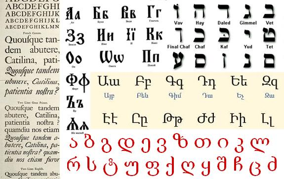

2026 Славянский этногенез.
Язык и культура славян
Славянский язык
Славянский язык является основой для множества современных славянских языков. В процессе этногенеза произошло разделение на три группы славянских языков: западнославянские, восточнославянские и южнославянские. Развитие письменности, а также распространение христианства сыграло важную роль в становлении культурных традиций славян. Религиозные обряды, народные праздники и обычаи, такие как Рождество, Масленица, и Пасха, сохранились до сих пор.

Письменность
Первая литературная обработка славянских языков была проведена в 860-х годах. Создателями славянской письменности были братья Кирилл (Константин-Философ) и Мефодий, которые перевели для нужд Великой Моравии с греческого языка на старославянский литургические тексты.
В своей основе новый литературный язык имел южно-македонский (солунский) диалект, но в Великой Моравии он усвоил много местных языковых особенностей. Позже он получил дальнейшее развитие в Болгарии. На этом языке (обычно называемом «старославянским языком») была создана богатейшая оригинальная и переводная литература в Моравии, Паннонии, Болгарии, на Руси, в Сербии. Существовало два славянских алфавита: глаголица и кириллица. От IX века славянских текстов не сохранилось. Самые древние относятся к X веку: «Добруджанская надпись» 943 года, надпись царя Самуила 993 года, «Варошская надпись» 996 года и другие. Начиная с XI века сохранилось больше славянских памятников.

Фонектика
В области фонетики между славянскими языками имеются некоторые существенные различия. В большинстве современных славянских языков утрачено противопоставление гласных по долготе / краткости, в то же время в чешском и словацком языках (исключая североморавский и восточнословацкий диалекты), в литературных нормах штокавской группы (сербской, хорватской, боснийской и черногорской), а также отчасти в словенском языке эти различия до сих пор сохраняются.